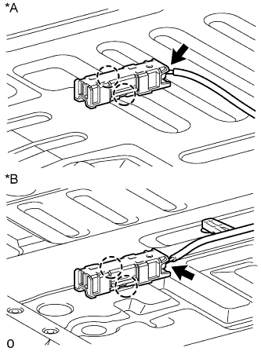

ГЕНЕРАТОР ЭЛЕКТРОННОГО КЛЮЧА (в багажном отделении) > СНЯТИЕ |
| 1. СНИМИТЕ ЗАДНЮЮ КРЫШКУ В СБОРЕ (для 3-дверных моделей с задней крышкой) |
Снимите заднюю крышку.
| 2. СНИМИТЕ НАЛАДКУ КОМПЛЕКТА НАПОЛЬНЫХ КОВРИКОВ (для 3-дверных моделей) |
 |
С помощью отвертки расцепите 2 захвата и снимите накладку установочной пластины коврика.
| *1 | Защитная клейкая лента |
| 3. СНИМИТЕ ЗАДНЮЮ ОПОРНУЮ ПЛАСТИНУ КОВРИКА ЗАДНЕГО ПОЛА (для 3-дверных моделей) |
 |
Выверните 5 винтов.
Освободите 6 захватов и снимите заднюю опорную пластину коврика заднего пола.
| 4. СНИМИТЕ ЗАДНИЙ НАПОЛЬНЫЙ КОВРИК В СБОРЕ (для 3-дверных моделей) |
 |
Снимите задний напольный коврик.
| 5. СНИМИТЕ ЗАДНЕЕ СИДЕНЬЕ № 2 В СБОРЕ (для 5-дверных моделей с задним сиденьем № 2) |
Для сидений с ручным приводом:
Снимите заднее сиденье № 2 в сборе (Нажмите здесь).
Для сидений с электроприводом:
Снимите заднее сиденье № 2 в сборе (Нажмите здесь).
Для моделей с противоположно расположенными сиденьями:
Снимите заднее сиденье № 2 в сборе (Нажмите здесь).
| 6. СНИМИТЕ ЗАДНЮЮ КРЫШКУ В СБОРЕ (для 5-дверных моделей с задней крышкой) |
Снимите заднюю крышку.
| 7. СНИМИТЕ ПЕРЕДНЮЮ ОБЛИЦОВОЧНУЮ НАКЛАДКУ БАГАЖНОГО ОТДЕЛЕНИЯ (для 5-дверных моделей без заднего сиденья № 2) |
 |
Освободите 4 захвата и снимите накладку.
 |
Выверните болт и снимите защелку ремня для удержания багажа и переднюю облицовочную накладку багажного отделения.
| *1 | Защелка ремня для удержания багажа |
| 8. СНИМИТЕ ПАНЕЛЬ ПОЛКИ БАГАЖНОГО ОТДЕЛЕНИЯ № 1 В СБОРЕ (для 5-дверных моделей без заднего сиденья № 2) |
 |
Освободите фиксатор и снимите панель полки багажного отделения № 1.
| 9. СНИМИТЕ ЗАДНЮЮ ОПОРНУЮ ПЛАСТИНУ КОВРИКА ЗАДНЕГО ПОЛА (для 5-дверных моделей без заднего сиденья № 2) |
 |
Освободите 5 фиксаторов и 4 захвата и снимите заднюю опорную пластину коврика заднего пола.
| 10. СНИМИТЕ ЛЕВУЮ БОКОВУЮ НАПРАВЛЯЮЩУЮ ПОЛА (для 5-дверных моделей с направляющей полки багажного отделения) |
 |
Выверните 3 болта и снимите боковую направляющую пола.
| 11. СНИМИТЕ ПРАВУЮ БОКОВУЮ НАПРАВЛЯЮЩУЮ ПОЛА (для 5-дверных моделей с направляющей полки багажного отделения) |
| 12. СНИМИТЕ ЗАДНИЙ НАПОЛЬНЫЙ КОВРИК В СБОРЕ (для 5-дверных моделей без заднего сиденья № 2) |
Освободите 4 захвата и снимите задний напольный коврик.

| *A | для моделей без направляющей полки багажного отделения | *B | для моделей с направляющей полки багажного отделения |
| *C | Для сидений с противоположным расположением | - | - |
| 13. СНИМИТЕ ВНУТРЕННЮЮ АНТЕННУ ЭЛЕКТРОННОГО КЛЮЧА № 3 В СБОРЕ |
|  |
Отсоедините разъем.
| *A | Для 3-дверных моделей |
| *B | Для 5-дверных моделей |
Освободите 2 захвата и снимите внутреннюю антенну электронного ключа № 3 в сборе.